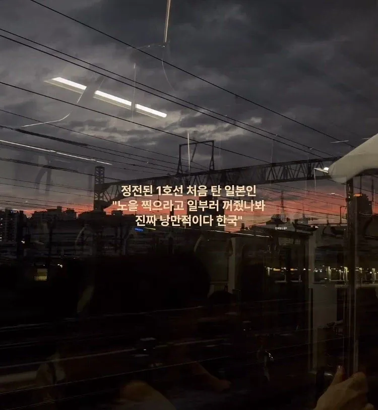

??? : 노을보라고 일부러 전철 조명을 꺼주다니 한국은 정말 낭만적이야..
댓글
어두운거 좋아해서 항상 저기서 계속 안켜지면 좋겠다 생각함 ㅋㅋ
???:이대로 시간이 멈췄으면 좋겠어요
절연 구간(데드 섹션)
"전"철이라서 전기 공급 방식이 바뀌는 구간이 생기는데
그 사이 구간을 전기 공급 없이 관성으로 주행함
1호선 서울역 ~ 남영역 구간은... 교류에서 직류로 바뀌는 절연 구간임
동일 방식으로 절연되는 곳이 지하청량리-회기 사이 구간
그리고 서로 고집부리다 결국 신호랑 전류 문제로 절연되는 곳이 4호선 선바위, 남태령 꽈배기굴 구간
살면서 처음 안 사실이네 좋은 정보 고마워
저기서 멈추면 다시 못움직임? 열차 내부에 비상용 전지같은게 있으려나
보통 열차가 기니까 상관없음
보통은 중립으로 놓고 관성주행을 하기 때문에 멈출일 자체가 거의 없다고 보면 됨
다만 신호기 문제라던가 선로침입 등 비정상적인 상황일때 절연구간에서 제동할 수는 있는데
일단 멈추고 나면 자력으로는 탈출하기 힘든 구간이 일부 존재함
과거 사례를 보면 경의선의 경우엔 구난열차가 투입되서 탈출하였고
경인선에선 오르막 중간에 정차하였기 때문에 후진으로 빠져나갔다 재진입입 한 사례가 있음
솔직히 불꺼진거 좋아해
처음에 탔을때 신기하긴 했음 ㅋㅋㅋㅋ